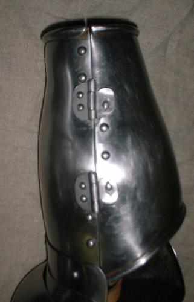
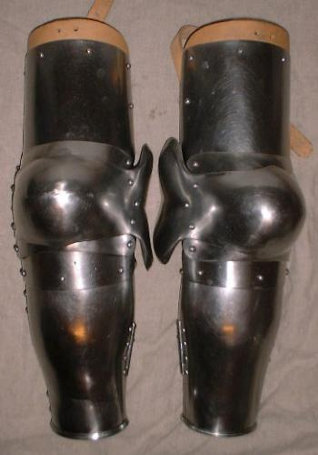
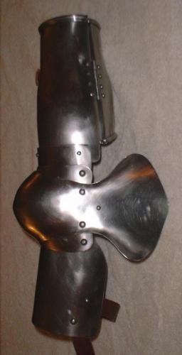
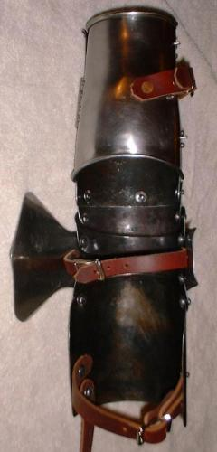
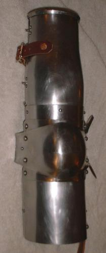
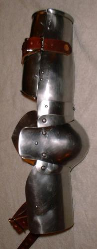
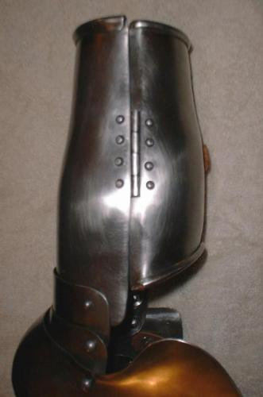
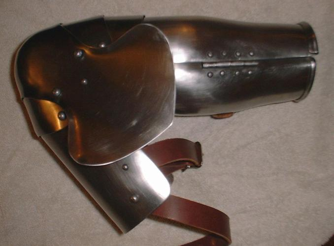

Early-15th Century Italian style Arm harnesses
Finished April 11, 2000
Pair of arms 1050 Carbon Steel 18ga. Heat treated (quenched at
1500F and Tempered to 600F) (shown 1st)
Note that the turning pins and the interlocking tabs on the vambrace
are not correct for 15th century Italian arm harnesses. The turning
pins were added at the buyers request, the correct way of closing the vambrace
is a single strap and buckle. The interlocking tabs were added as reenforcements
for SCA rattan combat.




Finished Jan. 2000
Pair of arms 1050 Carbon Steel 18ga. and 20ga. Heat treated
(quenched at 1500F and Tempered to 600F) (left arm shown 2nd)






Left arm 304 Stainless Steel 18ga. and 20ga.
Right arm 304 Stainless Steel 16ga. and 18ga.
Finished April 1999
Right arm 304 Stainless Steel 18ga. and 20ga. (for tournaments)
Finished Sept. 1999
Pair of arms 1050 Carbon Steel 18ga. and 20ga. Heat treated (quenched at 1500F and Tempered to 600F) (left arm shown 2nd)
Finished Jan. 2000
Pair of arms 1050 Carbon Steel 18ga. Heat treated (quenched at
1500F and Tempered to 600F) (shown 1st)
Note that the turning pins and the interlocking tabs on the vambrace
are not correct for 15th century Italian arm harnesses. The turning
pins were added at the buyers request, the correct way of closing the vambrace
is a single strap and buckle. The interlocking tabs were added as reenforcements
for SCA rattan combat.
Finished April 11, 2000
Updated Patterns on April 11,2000
I would build these arms in the following order:
1) cut out the plates
2) punch any holes which are on the patterns
3) finish the plate edges and corners
4) Roll the edges of both the vambrace halves marked --ROLL--
on the pattern
5) Dish couter/"elbow cop" and shape the wing. Raise/Shape the
front of the vambrace. Shape the other plates.
6) Fine tune the articulation. Optional: Cut slots for
the sliding rivets connecting the vambrace to the outer lane.
7) Polish the plates
8) Assemble the arms. Add the hinge for the vambrace. Add catch
tabs for the vambrace.
9) Add the straps. Optional: Add spring pins for
the vambrace.
Copyright 1999 Craig W. Nadler All rights reserved